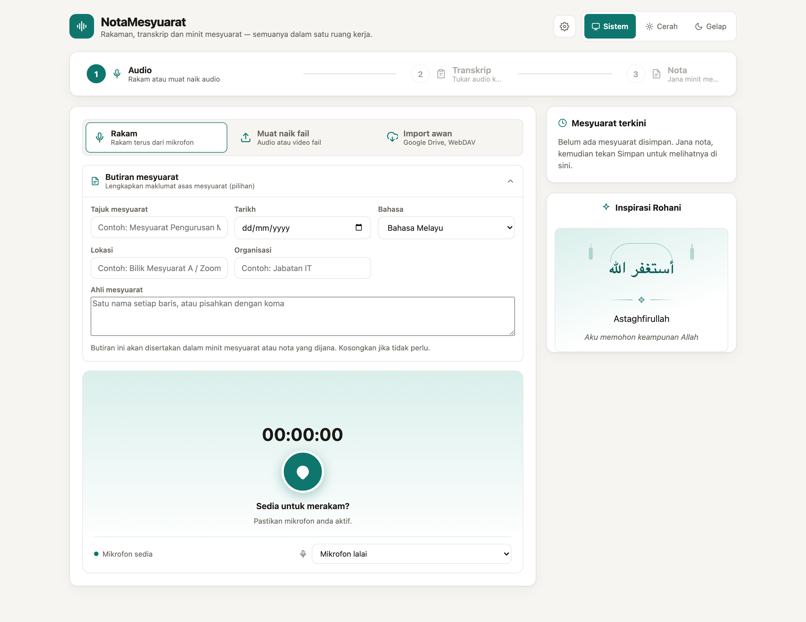
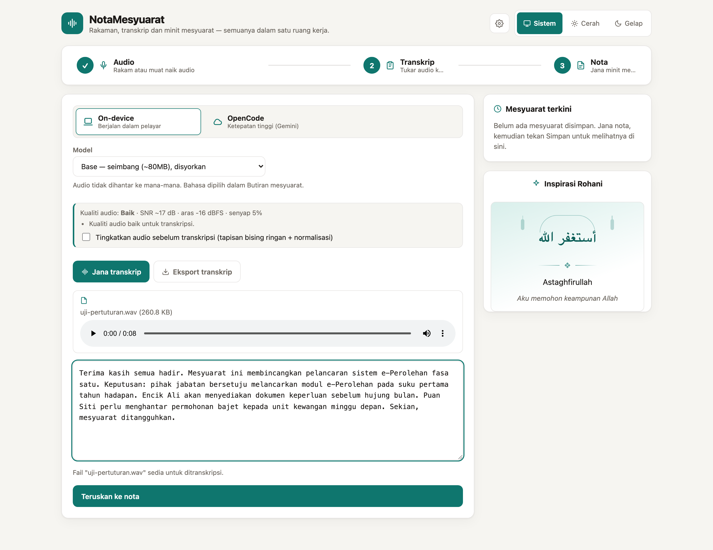
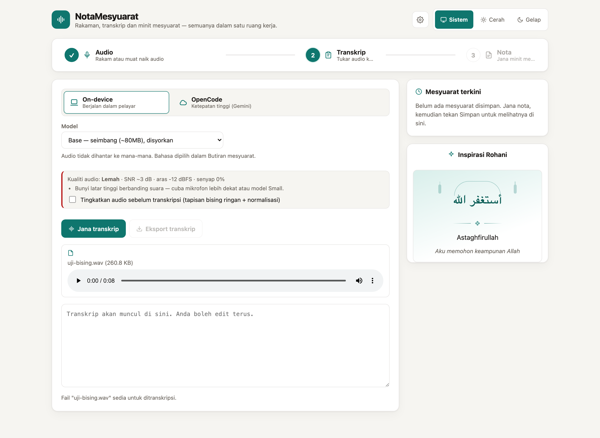
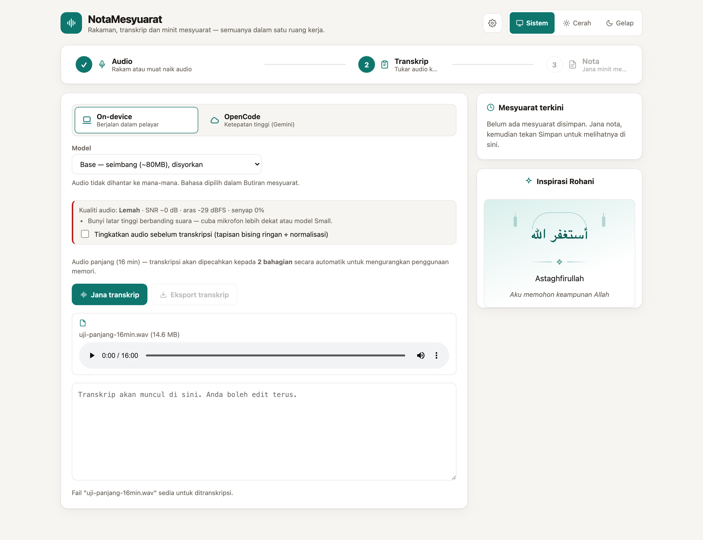
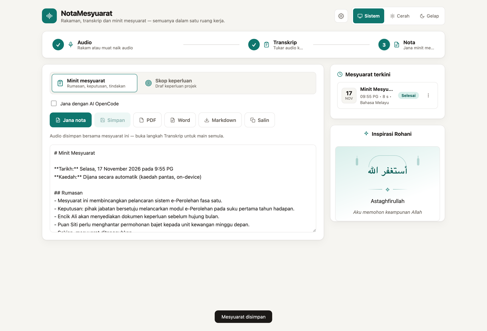
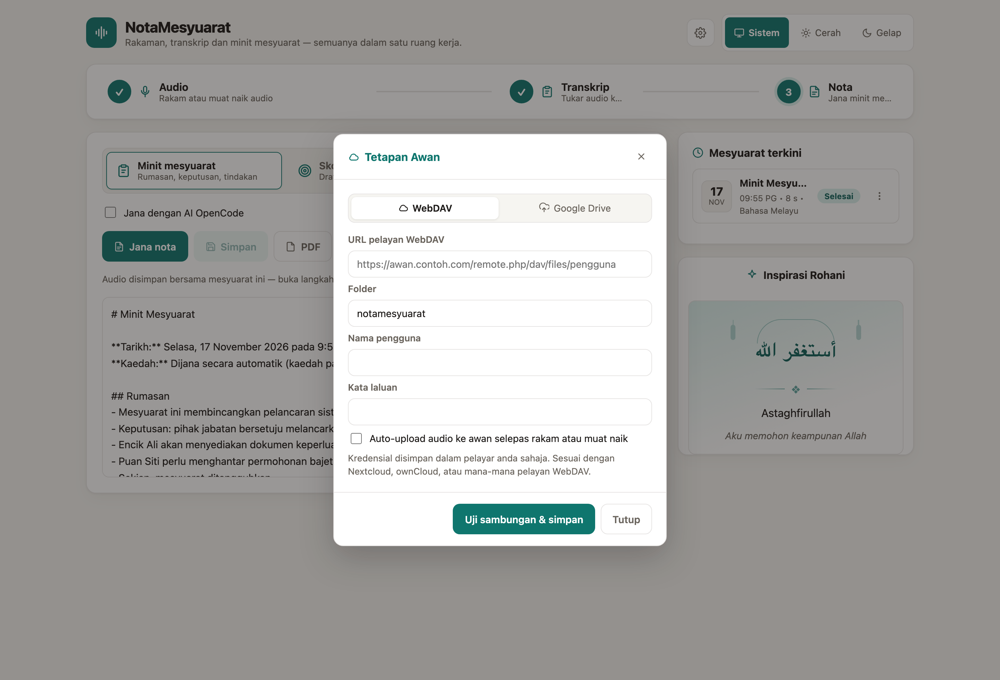

| ID Dokumen | NM-PG-001 |
| Versi | 1.4 |
| Tarikh Keluaran | 16 November 2026 |
| Status | Muktamad (Final) |
| Klasifikasi | Dalaman |
| Disediakan oleh | Pasukan Projek NotaMesyuarat |
| Pemilik Dokumen | Pemilik Produk NotaMesyuarat |
| Versi Aplikasi | 0.3.0 (binaan produksi) |
| Nama Dokumen | Manual Pengguna Aplikasi NotaMesyuarat |
| ID Dokumen | NM-PG-001 |
| Versi | 1.4 |
| Status | Muktamad (Final) — untuk kelulusan pemilik produk |
| Tarikh | 16 November 2026 |
| Penulis | Pasukan Projek NotaMesyuarat |
| Penyemak | Pemilik Produk NotaMesyuarat |
| Klasifikasi | Dalaman |
| Edaran | Pengguna aplikasi NotaMesyuarat; pasukan projek; pihak berkepentingan dalaman |
| Dokumen Berkaitan | NM-AU-001 Laporan Audit Aplikasi; README projek; AGENTS.md |
| Versi | Tarikh | Penerangan Perubahan | Penulis |
|---|---|---|---|
| 1.0 | 16 Nov 2026 | Keluaran pertama — selaras dengan aplikasi selepas pelaksanaan pembetulan audit (AAERA). | Pasukan Projek |
| 1.1 | 16 Nov 2026 | Audio kini disimpan bersama rekod mesyuarat; penyuntingan mesyuarat tersimpan mengemas kini rekod sedia ada; tempoh audio dipaparkan; dokumentasi privasi dan storan dikemas kini. | Pasukan Projek |
| 1.2 | 16 Nov 2026 | Selaras dengan v0.2.1: pengesahan auto-upload Google Drive; nota kuota OpenCode; baris penyelesaian masalah "Failed to fetch" untuk OpenCode; versi aplikasi dikemas kini. | Pasukan Projek |
| 1.3 | 16 Nov 2026 | Selaras dengan v0.3.0: panel kualiti audio (SNR/aras/senyap + tip), pilihan Tingkatkan audio, dan pemecahan automatik audio panjang (>15 min). | Pasukan Projek |
| 1.4 | 17 Nov 2026 | Menambah Senarai Rajah, dua rajah seni bina/aliran kerja, dan enam tangkapan skrin UI sebenar bagi setiap langkah utama. | Pasukan Projek |
| Peranan | Nama & Jawatan | Tandatangan | Tarikh |
|---|---|---|---|
| Disediakan oleh | Pasukan Projek NotaMesyuarat | ||
| Disemak oleh | Pemilik Produk | ||
| Diluluskan oleh | Pemilik Projek |
NotaMesyuarat ialah aplikasi web yang membolehkan pengguna merakam mesyuarat, menjana transkrip secara automatik, dan menghasilkan minit mesyuarat atau draf skop keperluan. Aplikasi ini berjalan dalam pelayar dan direka untuk memelihara privasi: secara lalai, audio diproses sepenuhnya pada peranti pengguna dan tidak dihantar ke mana-mana pelayan.
Dokumen ini menyediakan arahan langkah demi langkah untuk pengguna akhir, termasuk penyediaan audio, pemilihan enjin transkripsi, penjanaan dan eksport nota, konfigurasi storan awan, serta penyelesaian masalah asas.
Panduan ini merangkumi semua fungsi utama aplikasi versi 0.1.0: rakaman langsung, muat naik fail, import awan, transkripsi on-device dan OpenCode, penjanaan nota, penyimpanan setempat, eksport PDF/Word/Markdown, tetapan awan (WebDAV dan Google Drive), dan tema paparan.
| Kumpulan | Keperluan utama |
|---|---|
| Setiausaha / urus setia mesyuarat | Minit mesyuarat pantas dan eksport Word/PDF |
| Penganalisis perniagaan | Draf skop keperluan daripada transkrip |
| Pengurus projek | Rakaman mesyuarat, tindakan dan simpanan rekod |
| Pentadbir sistem | Konfigurasi awan dan pengurusan akses API |
| Item | Keperluan |
|---|---|
| Pelayar | Chrome, Edge atau Chromium terkini (disyorkan). Firefox dan Safari moden sepatutnya berfungsi tetapi belum diuji sepenuhnya. |
| Sambungan internet | Diperlukan sekali untuk memuat turun model Whisper (50–250 MB) dan untuk mod OpenCode. |
| Peranti | Komputer riba/desktop disyorkan untuk mesyuarat panjang; telefon dan tablet disokong. |
| Mikrofon | Diperlukan untuk rakaman langsung; kebenaran pelayar mesti dibenarkan. |
| Storan | IndexedDB pelayar untuk rekod mesyuarat; ruang cakera untuk cache model. |
Kemas kini aplikasi berlaku secara automatik apabila aplikasi dibuka semula dengan sambungan internet.
Aplikasi berfungsi dalam tiga langkah yang dipaparkan di bahagian atas skrin.
| Langkah | Nama | Fungsi |
|---|---|---|
| 1 | Audio | Rakam, muat naik fail atau import daripada awan |
| 2 | Transkrip | Tukar audio kepada teks |
| 3 | Nota | Jana minit mesyuarat atau draf skop keperluan |
Panel sisi mengandungi Mesyuarat terkini (senarai rekod tersimpan) dan Inspirasi Rohani. Bar atas mengandungi Tetapan awan dan pilihan tema Sistem / Cerah / Gelap.
Langkah 2 dan 3 dikunci sehingga audio dan transkrip disediakan. Ini memastikan aliran kerja sentiasa lengkap sebelum nota dijana.
Format disokong: mp3, m4a, wav, webm, ogg, mp4, mov, aac, flac — termasuk rakaman Zoom, Google Meet dan video iPhone. Fail yang bukan audio/video akan ditolak dengan mesej ralat.
Klik Butiran mesyuarat untuk mengisi tajuk, tarikh, bahasa, lokasi, organisasi dan senarai ahli. Butiran ini diserap ke dalam pengepala minit yang dijana. Medan kosong tidak akan direka-reka.
| Medan | Keterangan |
|---|---|
| Tajuk mesyuarat | Tajuk nota dan nama dalam senarai mesyuarat |
| Tarikh | Tarikh mesyuarat (lalai: hari ini) |
| Bahasa | Bahasa pertuturan — membantu ketepatan transkripsi |
| Lokasi | Contoh: Bilik Mesyuarat A / Zoom |
| Organisasi | Contoh: Jabatan IT |
| Ahli mesyuarat | Satu nama setiap baris atau dipisahkan dengan koma |

| Model | Saiz muat turun | Kelajuan | Ketepatan |
|---|---|---|---|
| Tiny | ~50 MB | Paling pantas | Asas |
| Base (disyorkan) | ~80 MB | Seimbang | Baik |
| Small | ~250 MB | Paling lambat | Paling tepat |
Model dimuat turun sekali sahaja dan disimpan dalam cache pelayar. Selepas itu, transkripsi boleh berjalan tanpa internet.

Selepas audio dimuatkan, aplikasi menganalisis kualiti secara automatik dan memaparkan panel Kualiti audio:
| Penunjuk | Maksud |
|---|---|
| Baik / Sederhana / Lemah | Penilaian keseluruhan untuk transkripsi |
| SNR | Nisbah suara berbanding bunyi latar — lebih tinggi lebih baik |
| Aras | Kekuatan audio dalam dBFS |
| Senyap | Peratus bahagian audio yang senyap |
Aplikasi turut memberikan tip khusus (dekatkan mikrofon, kurangkan gain, guna model Small) berdasarkan keputusan analisis.

Audio melebihi 15 minit dipecahkan secara automatik kepada bahagian ~10 minit dan ditranskripsi satu demi satu — mengurangkan penggunaan memori dan membolehkan mesyuarat panjang diproses pada peranti biasa.

Transkrip boleh diedit terus dalam kotak teks. Klik Eksport transkrip untuk memuat turun fail Markdown, atau Teruskan ke nota apabila selesai.
| Jenis | Kegunaan |
|---|---|
| Minit mesyuarat | Rumasan, keputusan dan item tindakan |
| Skop keperluan | Objektif, fungsi dicadangkan dan nota tambahan |
Klik Jana nota. Kaedah pantas berjalan sepenuhnya di dalam pelayar. Jika pilihan Jana dengan AI OpenCode ditandakan, aplikasi akan menggunakan model AI yang dipilih; jika AI gagal atau tiada API key, aplikasi gugur secara automatik ke kaedah pantas supaya nota tetap terhasil.
Klik Simpan untuk menyimpan rekod ke dalam pelayar.
| Format | Hasil |
|---|---|
| Fail .pdf sedia untuk dicetak atau dihantar | |
| Word | Fail .doc yang dibuka dalam Microsoft Word / Google Docs |
| Markdown | Fail .md teks biasa |
| Salin | Salin nota ke papan keratan |

Panel Mesyuarat terkini memaparkan mesyuarat yang disimpan pada peranti ini.
Data disimpan dalam IndexedDB pelayar pada peranti ini sahaja dan tidak disegerakkan antara peranti.
Klik ikon tetapan di bar atas untuk membuka dialog Tetapan Awan.
notamesyuarat).Folder mesti wujud terlebih dahulu di pelayan anda. Kredensial disimpan dalam pelayar pengguna sahaja.

Cara mencipta OAuth Client ID:
Fail disimpan dalam folder notamesyuarat di Drive
pengguna. Aplikasi meminta akses minimum (drive.file);
akses penuh hanya diminta jika pilihan "Cari keseluruhan Drive"
diaktifkan.
| Pilihan | Kesan |
|---|---|
| Auto-upload audio ke awan | Audio dimuat naik secara automatik selepas rakaman atau muat naik |
| Cari keseluruhan Drive | Menyenaraikan semua fail audio/video dalam Drive, bukan hanya folder aplikasi |
Pilihan tema disimpan untuk sesi seterusnya. Aplikasi juga menghormati tetapan sistem prefers-reduced-motion untuk mengurangkan animasi.
| Data | Lokasi Simpanan | Dihantar Keluar |
|---|---|---|
| Audio (mod on-device) | Memori pelayar sahaja | Tidak |
| Transkrip dan nota | IndexedDB pelayar | Tidak |
| Audio mesyuarat (disimpan bersama rekod) | IndexedDB pelayar | Tidak |
| API key OpenCode | localStorage pelayar | Hanya kepada OpenCode apabila digunakan |
| Kredensial WebDAV | localStorage pelayar | Hanya kepada pelayan WebDAV pengguna |
| Token OAuth Drive | Memori pelayar (luput ~1 jam) | Hanya kepada Google API |
| Tetapan tema/zikir | localStorage pelayar | Tidak |
| Masalah | Punca Biasa | Penyelesaian |
|---|---|---|
| Tidak dapat mengakses mikrofon | Kebenaran mic ditolak | Benarkan mikrofon pada ikon kunci di bar alamat, kemudian muat semula |
| Transkripsi mengambil masa lama | Model dimuat turun kali pertama | Tunggu muat turun selesai; larian seterusnya lebih pantas |
| Tiada suara dikesan | Audio senyap atau terlalu rendah | Semak audio; cuba model Small |
| Transkrip mengulang ayat | Halusinasi model kecil | Guna model Base/Small dan tetapkan bahasa dengan betul |
| Sila masukkan OpenCode API key | Kunci belum diisi | Tampal API key dalam tab OpenCode |
| OpenCode API: HTTP 401 | Kunci tidak sah atau luput | Jana kunci baharu di OpenCode Console |
| Transkripsi OpenCode gagal: Failed to fetch | Kuota percuma habis, atau perkhidmatan tidak membenarkan permintaan terus dari pelayar | Gunakan mod On-device; semak kuota/kunci OpenCode jika berterusan |
| Sambungan gagal: Failed to fetch | URL salah, CORS atau tiada internet | Semak URL dan pastikan pelayan membenarkan CORS |
| Butang Simpan tidak boleh ditekan | Kandungan tidak berubah sejak simpanan | Dijangkakan — edit nota untuk aktifkan semula |
| Eksport PDF/Word tidak berlaku | Muat turun disekat | Benarkan muat turun automatik untuk laman ini |
| Aplikasi tidak berfungsi luar talian | Cache service worker belum lengkap | Buka aplikasi sekali dengan internet |
Tidak, melainkan anda memilih mod OpenCode atau mengaktifkan auto-upload awan. Mod on-device kekal dalam pelayar.
Ya, selepas model Whisper dimuat turun sekali. Mod OpenCode dan import awan memerlukan internet.
Ya — kotak nota boleh diedit sepenuhnya sebelum disimpan atau dieksport.
Dalam folder Muat Turun (Downloads) pelayar anda.
Tidak. Data tersimpan pada peranti yang digunakan. Gunakan eksport atau awan untuk memindahkan hasil.
Bahasa Melayu, English, Bahasa Indonesia, Mandarin, Tamil dan mod auto-kenal.
Aplikasi boleh dijalankan secara setempat untuk tujuan pembangunan atau penggunaan dalaman.
| Arahan | Fungsi |
|---|---|
npm install | Pasang kebergantungan |
npm run dev | Pelayan pembangunan di http://localhost:5173 |
npm run build | Binaan produksi ke folder dist/ |
npm run preview | Pratonton binaan produksi |
npx vitest run | Jalankan ujian unit |
Dokumentasi audit, keputusan kejuruteraan dan daftar kecacatan terdapat
dalam folder audit/ projek.
| Istilah | Maksud |
|---|---|
| On-device | Pemprosesan yang berlaku dalam pelayar/peranti pengguna tanpa menghantar data ke pelayan. |
| Transkripsi | Proses menukar audio kepada teks. |
| Diarization | Pengenalpastian pembicara berbeza dalam transkrip. |
| PWA | Progressive Web App — aplikasi web yang boleh dipasang seperti aplikasi biasa. |
| WebDAV | Protokol storan fail berasaskan web (contoh: Nextcloud). |
| OAuth Client ID | Pengenal pasti aplikasi yang digunakan untuk mendapatkan kebenaran akses Google Drive. |
| API key | Kunci akses peribadi untuk perkhidmatan OpenCode. |
| Dokumen | Lokasi |
|---|---|
| README projek | README.md |
| Panduan pengguna (sumber Markdown) | PANDUAN-PENGGUNA.md |
| Laporan audit dan papan pemuka | audit/audit-summary.md, audit/audit-dashboard.html |
| Daftar kecacatan | audit/defects/defect-register.json |
| Arahan projek untuk pembangun | AGENTS.md |
— Tamat Dokumen —